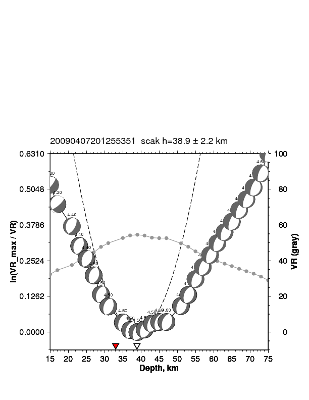
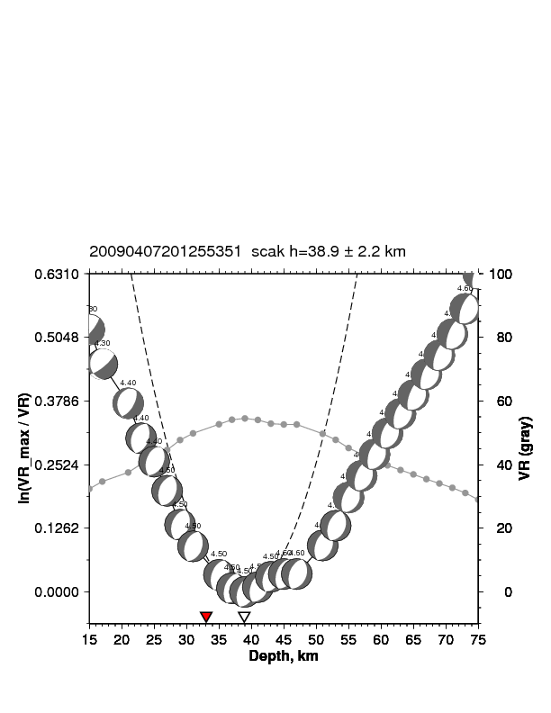

Moment tensor inversions
left - Waveform fits between data (in black) and synthetics (in red) for Anchorage event (2009-04-07 20:12:55.351).
right - Best depth estimate [centroid depth]. The inverted red triangle is the best depth estimated by Alaska Earthquake Center (AEC) using P-arrival times [hypocenter depth].
 

Very low frequency earthquakes (VLFE)
Waveform fits for a VLFE event.

Moment tensor catalog of southern Alaska


3D simulations
3D velocity model of southern Alaska (Eberhart-Phillips et. al. 2006) with shallow 1D velocity model of Cook Inlet basin (Shellenbaum et. al. 2010) embedded in it.

Synthetic waveforms filtered between 6-50s computed with (blue) and without (red) embedding the Cook Inlet basin.